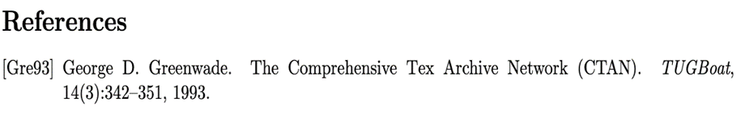

<div class="row">
    <div class="col-md-12 p-4">
        <h1 class="animate__animated animate__rotateInUpRight animate__delay-1s" style="text-align: center; color: #7d1541;">REFERENCIAS BIBLIOGRÁFICAS</h1>
        <div class="row mt-4 d-flex align-items-center">
            <div class="col-md-6">
                <p class="texto animate__animated animate__rotateInDownRight animate__delay-2s">
                    <b>Gestión de Referencias: </b>: Introducción al uso de BibTeX 
                    para crear bibliografías automáticas. <!-- <b>&sigma; = E&epsilon;</b> -->
                </p>
                <p class="texto animate__animated animate__lightSpeedInLeft animate__delay-3s">
                    <b>Ejemplo: </b>Citar un artículo científico en un documento LaTeX y generar una sección de referencias.
                </p>
            </div>
            <div class="col-md-6">
                
            </div>
        </div>
    </div>
</div>